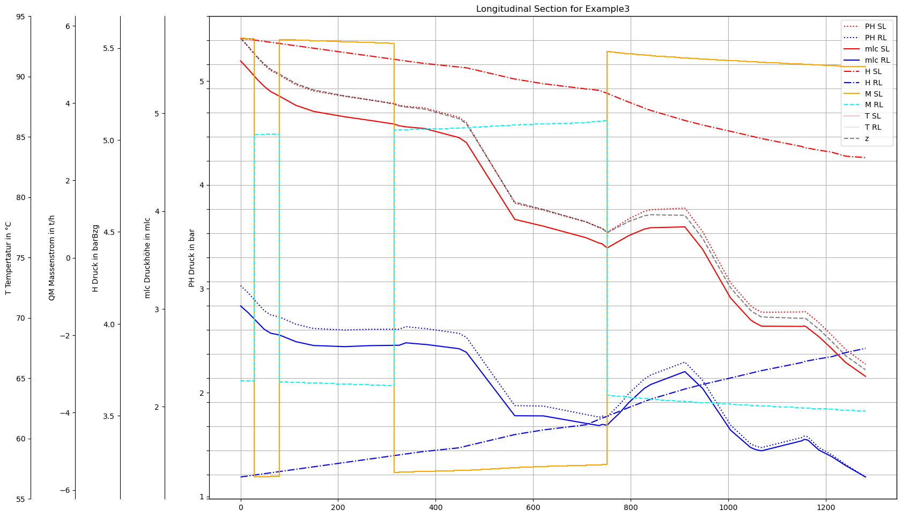

Imports
[1]:
import os
import logging
import pandas as pd
import datetime
import numpy as np
import subprocess
import matplotlib
import matplotlib.pyplot as plt
import matplotlib.dates as mdates
import matplotlib.gridspec as gridspec
import matplotlib.ticker as ticker
import matplotlib.colors as mcolors
from matplotlib.pyplot import Polygon
from matplotlib.ticker import FuncFormatter
from matplotlib.dates import DateFormatter, MinuteLocator
import matplotlib.ticker as ticker
import ipywidgets as widgets
from ipywidgets import interact
from bokeh.plotting import figure, show, output_file
from bokeh.models import ColumnDataSource, LinearAxis, Range1d
from bokeh.palettes import Spectral10
from IPython.display import Image
try:
from PT3S import dxAndMxHelperFcts
except:
import dxAndMxHelperFcts
try:
from PT3S import Rm
except:
import Rm
[2]:
pt3s_path = os.path.dirname(os.path.abspath(dxAndMxHelperFcts.__file__))
Logging
[3]:
logger = logging.getLogger()
logFileName= r"Example3.log"
loglevel = logging.DEBUG
logging.basicConfig(filename=logFileName
,filemode='w'
,level=loglevel
,format="%(asctime)s ; %(name)-60s ; %(levelname)-7s ; %(message)s")
fileHandler = logging.FileHandler(logFileName)
logger.addHandler(fileHandler)
consoleHandler = logging.StreamHandler()
consoleHandler.setFormatter(logging.Formatter("%(levelname)-7s ; %(message)s"))
consoleHandler.setLevel(logging.INFO)
logger.addHandler(consoleHandler)
Model and SirCalc
[93]:
dbFilename="DistrictHeating"
[94]:
rootdir="WDDistrictHeating"
[95]:
SirCalc = r"C:\3S\SIR 3S\SirCalc-90-14-02-10_Potsdam\SirCalc.exe"
Calculation of Results
The calculations take some time. If you have calculated the results once and want to rerun the script, set this to False.[6]:
calculate=False
[7]:
SirCalcXml = os.path.join(pt3s_path, "Examples", "WDDistrictHeating", "B1", "V0", "BZ1", "M-1-0-1.XML")
[8]:
if calculate:
with subprocess.Popen([SirCalc, SirCalcXml]) as process:
process.wait()
Read Model and Results
[9]:
m=dxAndMxHelperFcts.readDxAndMx(dbFile=os.path.join(pt3s_path+'/Examples/'+dbFilename+'.db3')
,preventPklDump=True
)
INFO ; Dx.__init__: dbFile (abspath): c:\users\jablonski\3s\pt3s\Examples\DistrictHeating.db3 exists readable ...
INFO ; dxAndMxHelperFcts.readDxAndMx: ..\Examples\DistrictHeating.db3 is newer than ..\Examples\WDDistrictHeating\B1\V0\BZ1\M-1-0-1.1.MX1: SIR 3S' dbFile is newer than SIR 3S' mxFile; in this case the results are maybe dated or (worse) incompatible to the model
INFO ; dxAndMxHelperFcts.readDxAndMx: ..\Examples\WDDistrictHeating\B1\V0\BZ1\M-1-0-1.XML is newer than ..\Examples\WDDistrictHeating\B1\V0\BZ1\M-1-0-1.1.MX1: SirCalc's xmlFile is newer than SIR 3S' mxFile; in this case the results are dated or (worse) incompatible to the model
INFO ; Mx.setResultsToMxsFile: Mxs: ..\Examples\WDDistrictHeating\B1\V0\BZ1\M-1-0-1.1.MXS reading ...
INFO ; dxWithMx.__init__: DistrictHeating: processing dx and mx ...
Editing
Get Nodes
[104]:
dfAGSN=m.dfAGSN
[105]:
dfAGSN=dfAGSN[['ID','Pos', 'LFDNR']]
[106]:
dfVBEL=m.V3_VBEL.reset_index()
[107]:
dfVBEL=dfVBEL[['OBJID','pk_i', 'pk_k']]
[108]:
df=pd.merge(dfAGSN, dfVBEL, left_on='ID', right_on='OBJID', how='inner')
[109]:
df=df.drop_duplicates()
[110]:
df_i=df[df['pk_i'].notna()]
df_k=df[df['pk_k'].notna()]
df_i=df_i.rename(columns={'pk_i': 'pk'})
df_k=df_k.rename(columns={'pk_k': 'pk'})
df=pd.concat([df_i, df_k])
[111]:
df=df.drop(columns=['pk_i', 'pk_k', 'OBJID'])
[112]:
df=df.sort_values('ID')
df=df.drop_duplicates(subset=['Pos', 'LFDNR', 'pk'], keep='first')
[113]:
df=df.sort_values(['Pos', 'LFDNR'])
Get Node Results
[114]:
dfKNOT=m.V3_KNOT
[115]:
df=pd.merge(df, dfKNOT, on='pk', how='left')
[116]:
df=df[~df['NAME'].str.startswith('R')]
[117]:
new_names = {df.columns[162]: 'P', df.columns[194]: 'QM', df.columns[202]: 'T'}#!!!!!!!Massenstrom nicht Volumenstrom
df.rename(columns=new_names, inplace=True)
[118]:
cols_to_keep=['ID', 'Pos', 'LFDNR', 'pk', 'NAME','P','QM','T']
[119]:
df=df[cols_to_keep]
[120]:
dfs = [df[df['LFDNR'] == i] for i in [1.0, 2.0, 3.0]]
[121]:
for df in dfs:
df.reset_index(inplace=True, drop=True)
[122]:
dfs[0].head()
[122]:
| ID | Pos | LFDNR | pk | NAME | P | QM | T | |
|---|---|---|---|---|---|---|---|---|
| 0 | 5691533564979419761 | 0 | 1.0 | 5398100694284104779 | V-E0 | 5.878388 | 0.0 | 90.0 |
| 1 | 5691533564979419761 | 0 | 1.0 | 4825391580467484032 | V-K1683S | 5.800117 | 0.0 | 89.998016 |
| 2 | 5048873293262650113 | 1 | 1.0 | 4825391580467484032 | V-K1683S | 5.800117 | 0.0 | 89.998016 |
| 3 | 5048873293262650113 | 1 | 1.0 | 5180617780362861593 | V-K1693S | 5.731768 | 0.0 | 89.996399 |
| 4 | 5715081934973525403 | 2 | 1.0 | 4964920487041183545 | V-K2163S | 5.698539 | 0.0 | 89.995605 |
Plot
Define Axes
[123]:
def fyP(ax,offset=0):
ax.spines["left"].set_position(("outward", offset))
ax.set_ylabel('Druck in bar')
ax.set_ylim(1,6)
ax.set_yticks(sorted(np.append(np.linspace(1,6,11),[])))
ax.yaxis.set_ticks_position('left')
ax.yaxis.set_label_position('left')
def fyM(ax,offset=60):
Rm.pltLDSHelperY(ax)
ax.spines["left"].set_position(("outward",offset))
ax.set_ylabel('Massenstrom in t/h')
ax.set_ylim(500,550)
ax.set_yticks(sorted(np.append(np.linspace(500,550,11),[])))
ax.yaxis.set_ticks_position('left')
ax.yaxis.set_label_position('left')
def fyT(ax,offset=120):
Rm.pltLDSHelperY(ax)
ax.spines["left"].set_position(("outward",offset))
ax.set_ylabel('Tempertatur in °C')
ax.set_ylim(85,95)
ax.set_yticks(sorted(np.append(np.linspace(0,95,11),[])))
ax.yaxis.set_ticks_position('left')
ax.yaxis.set_label_position('left')
Non-interactive Plot
[124]:
def plot():
fig, ax0 = plt.subplots(figsize=Rm.DINA3q)
ax0.set_yticks(np.linspace(0, 10, 21))
ax0.yaxis.set_ticklabels([])
ax0.grid()
#P
ax1 = ax0.twinx()
fyP(ax1)
ax1.plot(df.index, df['P'], color='red', label='P')
#M
ax2 = ax0.twinx()
fyM(ax2)
ax2.plot(df.index, df['QM'], color='orange', label='T')
#T
ax3 = ax0.twinx()
fyT(ax3)
ax3.plot(df.index, df['T'], color='pink', label='M')
# Set the x-axis limits
ax0.set_xlim(0, 87)
#Rm.pltHelperX(ax0, dateFormat='%Hh:%Mm:%Ss', bysecond=list(range(0, 61, 2)), yPos=0)
ax0.set_title('Longitudinal Section for '+dbFilename)
#Create printable Output
plt.savefig('Example3_Output.pdf', format='pdf', dpi=300)
plt.savefig('Example2_Output.png', format='png', dpi=300)
plt.show()
[125]:
plot()
